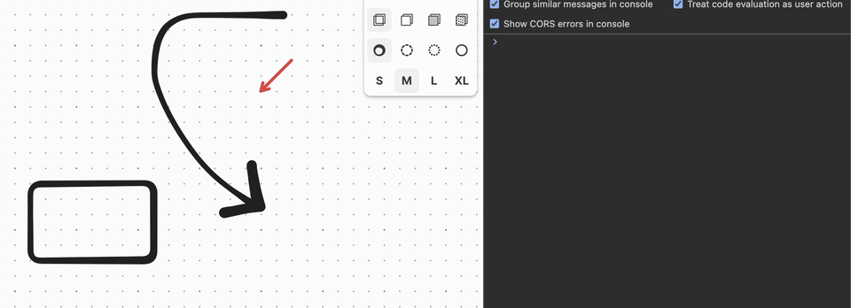
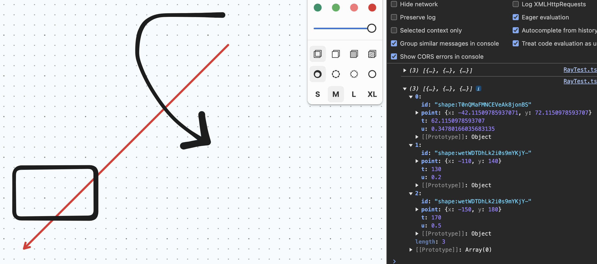

Raycast In tldraw
19 Jan 2025
For one of my tldraw projects I’ve been working on, I need to be able to know if something is under a shape. As someone who dabbles in game development, naturally I wanted to reach for a raycast so I could send out a ray and see if any shapes intersected with it. I looked in the tldraw docs and it doesn’t seem like functionality that exists in the base API, which makes sense because tldraw is not a game engine. So I figure I create it myself, how hard could it be? Let’s find out.
Attempt 1: Stepping With a Ray
My first idea was to use an old fashioned raycast. We start with a ray origin, direction, and an amount that represents how far the ray should check for hits.
Since we’re using Typescript, let’s create a couple types first to help us out. The ray origin and direction is a vector so let’s define the five-hundredth-million vector type ever created.
type Vec2 = {
x: number;
y: number;
};
Then, when we do get an a hit with the raycast, we want to return an intersection in the form of the id of the shape that was hit and the point that the shape was hit at.
type Intersection = {
id: string;
point: Vec2;
};
Okay, now we can start. Let’s create a reusable function for this. I’ll put the function definition and then we can go over the parameters.
const raycastStep = (
editor: Editor,
rayOrigin: Vec2,
rayDir: Vec2,
rayLength: number,
step: number
): Intersection[] => {};
-
editor- Is a reference to the tldraw editor instance. We need this to get the shapes on the page and to check if there’s hits with the ray. -
rayOrigin- The (x, y) position of where the ray starts on the canvas. -
rayDir- The direction that the ray should go in. For example, a direction of (-1, 1) will mean that the ray goes in the negative x direction (left) and positive in the y direction (which is down in tldraw since y increases going down). -
rayLength- The amount that the ray should extend to before stopping. -
step- The amount to move in between iterations. Every iteration the ray will extend by this amount. A lower value will give more precise results since there’s more checks at the cost of performance and time. A higher value will be faster but the ray might step over a shape and not count the intersection. This works very well if you have consistent spacing between shapes but that’s rarely the case with a typical usage of tldraw.
Ok let’s get into writing the function. Since we want the hits that occur when we send the ray, we get the current shapes on the page. We could do this every step of the ray but then the shapes might have changed between steps which could be what you want but we won’t cover that here.
const shapes = editor.getCurrentPageShapes();
Next, we need to keep track of the current position of the ray. As the ray steps, we update this position and use it to check for hits with shapes at that position. At the beginning, the current position is the same as the origin.
const rayCurrentPos: Vec2 = { x: rayOrigin.x, y: rayOrigin.y };
Now we need to know how much to step in each direction. We have the overall step amount but since x and y are separate, we have to multiply the direction by the step.
const stepCalc = {
x: rayDir.x * step,
y: rayDir.y * step,
};
We also have to keep track of the current length of the ray so that we know when we have reached the ray length and we should stop checking for hits.
let rayLengthCurrent = 0;
The last thing before we get to the stepping loop is to keep track of the shapes we’ve intersected with the ray.
let intersections: Intersection[] = [];
Ok now onto the loop. In the loop, we’ll:
-
Update the ray’s current position (
rayCurrentPos) by the amount to step in each direction (stepCalc). -
Check for intersections at the ray’s current position and update the
intersectionsif any were found. -
Update the current length of the ray for the next iteration’s check.
We want to keep stepping while the current length of the ray
(rayLengthCurrent) is smaller than the length of the ray passed in the
parameters (rayLength).
while (rayLengthCurrent < rayLength) {}
Inside of this loop, let’s do the first step, updating the ray’s current position by the step amount. This is simply just adding the step in each direction to the corresponding direction of the ray’s current position.
rayCurrentPos.x += stepCalc.x;
rayCurrentPos.y += stepCalc.y;
Now to check for intersections. tldraw has a really handy utility function for
this, getShapesAtPoint. This function takes an (x, y) point and optional
parameters for whether we want to check for hits inside of a shape and a margin
to have some give or take to the calculation.
const shapesAtPoint = editor
.getShapesAtPoint(
{
x: rayCurrentPos.x,
y: rayCurrentPos.y,
},
{
hitInside: true,
margin: 10,
}
)
.filter((shape) => intersections.every((i) => i.id !== shape.id));
Here we check for shapes at the current point of the ray. We set hitInside to
true because if the ray is inside of a shape we want to count that as a hit.
We also provide a margin because stepping can be so inaccurate, especially
with shapes like drawn lines and arrows. This will give some false results so in
a real scenario you would probably have a smaller amount for the margin.
We also need to filter out the shapes with ids that have already been added to
the intersections array because while the ray is near or in a shape, it will
keep returning that shape at that point.
Next, update the intersections array with the new ones we found, if any.
intersections = [
...intersections,
...shapesAtPoint.map((shape) => ({
id: shape.id,
point: { x: rayCurrentPos.x, y: rayCurrentPos.y },
})),
];
shapesAtPoint returns the shapes but we don’t need all that data, just the id
of the shape so we just save that along with the point of intersection, which is
the current position of the ray.
At the end of the loop we want to update the current length of the ray so that
the next iteration can know whether it has to keep going or end due to the ray
reaching its maximum length. We can calculate this by getting the ray’s
magnitude with length = sqrt(x^2 + y^2).
rayLengthCurrent += Math.sqrt(stepCalc.x ** 2 + stepCalc.y ** 2);
At the end of the function, outside the while loop, we can return any
intersections that were found.
return intersections;
Let’s use this!
const rayOrigin = { x: 20, y: 10 };
const rayDir = { x: -1, y: 1 };
const rayLength = 300;
const intersections = raycastStep(editor, rayOrigin, rayDir, rayLength, 10);
Here we create a ray starting at (20, 10) and going in a downward-left direction
on the canvas until it reaches a length of 300, checking for hits every 10
pixels. Remember that we also passed a margin of 10 in getShapesAtPoint so
hopefully this should get most intersections.
Here is an example of it working, showing how the ray steps as an array shape.
This method is cool, and fun to watch in debug mode, but it’s not very efficient. We have to step, which could miss some shapes, and we have to wait for the ray to finish stepping, when we really already know the positions of every shape on the page and we should be able to do an instant check. This brings us to the second method, a parametric ray-segment intersection check where we check the edge of every shape against the path of the ray to see where we have hits. This can give us more accurate results, especially for line based shapes.
Attempt 2: Ray-Segment Intersection
This function is going to have the same function signature as the stepping version, however, it’s going to have a different return value. In addition to the id of the shape and the point of intersection, we’ll also be able to determine how far along the ray that the intersection occured and how far along the edge that the intersection is. You might not need the data but it’s still fun to have.
Let’s define the type for this return value.
type IntersectionRaySegment = {
id: string;
point: Vec2;
/**
* How far along the ray (0 at the origin or x units away) the
* intersection is.
*/
t: number;
/**
* How far along the segment (0 at the start, 1 at the end) the
* intersection is.
*/
u: number;
};
So our function signature looks like this.
const raycastRaySegment = (
editor: Editor,
rayOrigin: Vec2,
rayDir: Vec2,
rayLength: number
): IntersectionRaySegment[] => {};
Just like before, let’s first get all of the shapes on the page.
const shapes = editor.getCurrentPageShapes();
Also again we need to keep track of the intersections that we found.
let intersections: IntersectionRaySegment[] = [];
Since we’re not stepping and just performing a single check, we don’t need to keep track of current position or ray length. We’ll be checking along the entire length of the ray in one calculation.
Next, since we’re working on edges, we need to loop through each shape.
shapes.forEach((shape) => {});
Note: We go through the edges so that we can have more accurate results, like where exactly we hit on a geo shape, but also consider a drawn line that starts from behind the ray and moves in front of it. To accurately get an intersection on this type of line, we have to split it up so that we know what parts are in front of the ray.
Ok so inside of this forEach loop, we need to create the edges that we’re
going to check the ray against.
tldraw has a very handy function to help with this called getShapeGeometry.
This returns useful data about a shape like it’s bounding box but also it’s
vertices, which are the points that make up the shape.
const geometry = editor.getShapeGeometry(shape.id);
if (!geometry) return;
Note: getShapeGeometry’s return doesn’t include undefined but I ran into
an issue where I got cannot read properties of undefined when trying to read
the vertices so I added the check for undefined in.
Now, we have the vertices under geometry.vertices. Again we’ll loop through
these to create the edges to check against.
geometry.vertices.forEach((vertex, i) => {});
Before we create an edge, we have to make a check first. If we’re on the last vertex for this shape, and the shape is not a closed shape, then we want to return early. A closed shape is a shape like a rectangle or circle while a not closed shape is a drawn line, arrow, etc. If the shape is closed, then we want to connect the last vertex to the first one to form the last edge. In a drawn line, we don’t want to connect the last vertex to the first one because it would close the line.
if (!geometry.isClosed && i === geometry.vertices.length - 1) {
return;
}
Now that we know we have another edge to create still, let’s get the end point of the edge. This is the next vertex, or the first vertex if we’re at the end of the vertices for a closed shape.
const nextVertex = geometry.vertices[(i + 1) % geometry.vertices.length];
Now we can make our edge, which spans from the current vertex to the next vertex. Let’s define a type for the edge next to our other types and then back in the loop, we create the edge.
type Edge = {
start: Vec2;
end: Vec2;
};
const edge: Edge = {
start: { x: shape.x + vertex.x, y: shape.y + vertex.y },
end: {
x: shape.x + nextVertex.x,
y: shape.y + nextVertex.y,
},
};
Now that we have the edge to check the ray against, we should filter out edges that aren’t in the direction of the ray. There’s likely to be a lot of these since most shapes will be outside the bounds of the ray so we want to avoid these intersection checks that we know will fail. To do this, we can use dot product culling.
To do this, we need to substract the start and end vectors from the origin of the ray which gives us the direction from the start of the ray to the edge start/end and then we take the dot product to determine whether that direction is in front of or behind the direction of the ray.
Let’s define the functions to functions to subtract two vectors and to take the dot product of a vector.
const sub = (vec1: Vec2, vec2: Vec2): Vec2 => {
return { x: vec1.x - vec2.x, y: vec1.y - vec2.y };
};
const dot = (vec1: Vec2, vec2: Vec2): number => {
return vec1.x * vec2.x + vec1.y * vec1.y;
};
Now we can use these to get the start and end dot products.
const dotStart = dot(sub(edge.start, rayOrigin), rayDir);
const dotEnd = dot(sub(edge.end, rayOrigin), rayDir);
If the dot product of either the start or end of the edge is lower than 0, then it means that the edge is behind the ray and we don’t need to check it so we can return early.
if (dotStart < 0 && dotEnd < 0) {
return;
}
At this point, we know we need to check this edge because it’s in the general vicinity of the ray. Let’s create the segment to check against by getting the direction of the edge. This tells us how we move from the start of the edge to the end.
const segment = sub(edge.end, edge.start);
Next, we need to get the delta vector, which is how we move from the start of the edge to the ray’s origin.
const delta = sub(rayOrigin, edge.start);
Next, we have another check to eliminate whether we should keep checking this
segment or not. We want to know if the segment is parallel to the ray or not. To
do this, we have to calculate the determinant. The formula for the determinant
is det = a.x * b.y - a.y * b.x so to use it, with our inverse y, we have.
const det = segment.x * -rayDir.y - segment.y * -rayDir.x;
Checking for a parallel line can be a bit tricky because we can consider it
parallel if it’s very close to zero instead of exactly zero. To do this check,
we take the absolute value of the determinant and check if it’s smaller than a
number very close to zero. This number is arbitrary and any small number can
work but a popular one is 1e-12.
if (Math.abs(det) < 1e-12) {
return;
}
Now we know that the lines are not parallel so we can continue checking. Here we
can solve for u and t in our intersection return value.
-
u- Tells us where along the segmentedge.start->edge.endthe ray intersects. This is a percentage of the point along the line. For example, if we intersect the middle of the segment, theuvalue will be 0.5. -
t- Tells us where along the rayrayOrigin->rayOrigin + rayDirectionwe intersect. Or at what point along the ray it intersects the shape.
This formula comes from rearranging
rayOrigin + t * rayDir = edge.start + u * segment which is a linear equation
used to solve the intersection of a ray and a segment. This is a known equation
so we won’t go into the details here but there’s plenty of resources online that
explain this much better than I could.
const u = (-delta.x * rayDir.y + delta.y * rayDir.x) / det;
const t = (segment.x * delta.y - segment.y * delta.x) / det;
A couple more checks here. First, since the line segment is from the start to
the end, u needs to be a value between 0 and 1. If it’s outside of these
values, then it means the intersection point is not actually on the segment so
we can return early.
if (u < 0 || u > 1) {
return;
}
Next, we only consider intersections in front of teh ray and within the length of the ray. Now since we did the dot product culling earlier all intersections should be in front of the ray but we might as well check anyways since we have the exact value now.
if (t < 0 || t > rayLength) {
return;
}
If both of these checks pass, we have an intersection! The point of intersection is the start of the edge, plus the amount along the edge that the intersection occurs at multiplied by the segment, which scales the length of the segment by the percentage point where the intersection occured.
const intersect: Vec2 = {
x: edge.start.x + u * segment.x,
y: edge.start.y + u * segment.y,
};
Then we save it to the intersections to return.
intersections = [
...intersections,
{
id: shape.id,
point: intersect,
t,
u,
},
];
Lastly, like the other function, outside of the loop we return the intersections.
return intersections;
Let’s use this with the same ray as last time.
const rayOrigin = { x: 20, y: 10 };
const rayDir = { x: -1, y: 1 };
const rayLength = 300;
const intersections = raycastRaySegment(editor, rayOrigin, rayDir, rayLength);
This looks like:

You’ll notice that we get multiple intersections for the same shape. You can filter these out like before but with the precise intersection information returned, it could be useful so I keep it around and just filter it out myself when I use the results.
In the end, this is probably the better solution but there’s still inefficiencies to checking every shape and its vertices. There’s still some optimizations to be made that we can maybe explore in a future post.
The source code for this post can be found on GitHub.